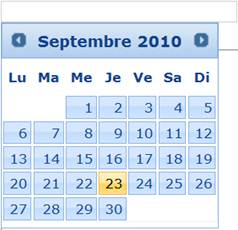

DatePicker provides localization support so that users can localize the calendar language and format for which the default language is English. DatePicker includes built-in support for languages.
Use Case Scenarios
Localization is the key feature that provides solutions to global customers.

Figure 111: DatePicker in French Culture
Adding Localization to an Application
Localization in DatePicker can be customized by using two ways, namely:
· DatePickerBuilder
· DatePickerModel
Using DatePickerBuilder
To customize Localization in DatePicker by using DatePickerBuilder:
1. Create a View.
2. In the View, invoke the DatePicker helper with the control ID.
3. Set the Localize method, to add the name of the culture from the Languages collection.
|
[ASPXView[aspx] <%=Html.Syncfusion().DatePicker("myDatePicker") .Localize(Languages.French_Swiss) %> |
|
View[cshtml] @{ Html.Syncfusion().DatePicker("myDatePicker") .Localize(Languages.French_Swiss).Render();} |
4. Build and run the application.
Figure 112: DatePicker in French Culture
Using DatePickerModel
To customize Localization in DatePicker by using DatePickerModel:
1. In the Controller, create an object for the DatePickerModel class.
2. Set the Localize property.
3. Assign the DatePickerModel class to the ViewData.
|
[Controller] public ActionResult Index() { DatePickerModel dtModel = new DatePickerModel() { Localize=Languages.French_Swiss }; ViewData["myDtModel"] = dtModel; return View(); } |
4. Create a View.
5. In the View, invoke the DatePicker helper with the control ID.
6. From the ViewData, assign the DatePickerModel class to the DatePicker helper.
|
View[ASPX]
<%= Html.Syncfusion().DatePicker("myDatePicker", (DatePickerModel)ViewData["myDtModel"]) %> |
|
View[cshtml]
@{ Html.Syncfusion().DatePicker("myDatePicker", (DatePickerModel)ViewData["myDtModel"]).Render(); } |
7. Build and run the application.
Figure 113: DatePicker in French Culture
Properties
The property of the Localization feature in DatePicker is described in the following tabulation:
|
Name |
Description |
Type |
Data Type |
Reference links |
|
Localize |
Gets or sets the culture for DatePicker. |
Server-side |
Languages |
Not applicable |
Sample Link
To view a sample:
1. Open the Tools Sample Browser from the dashboard. (Refer to the Samples and Location chapter.)
2. Navigate to Tools.Mvc -> DatePicker -> Localization Demo.